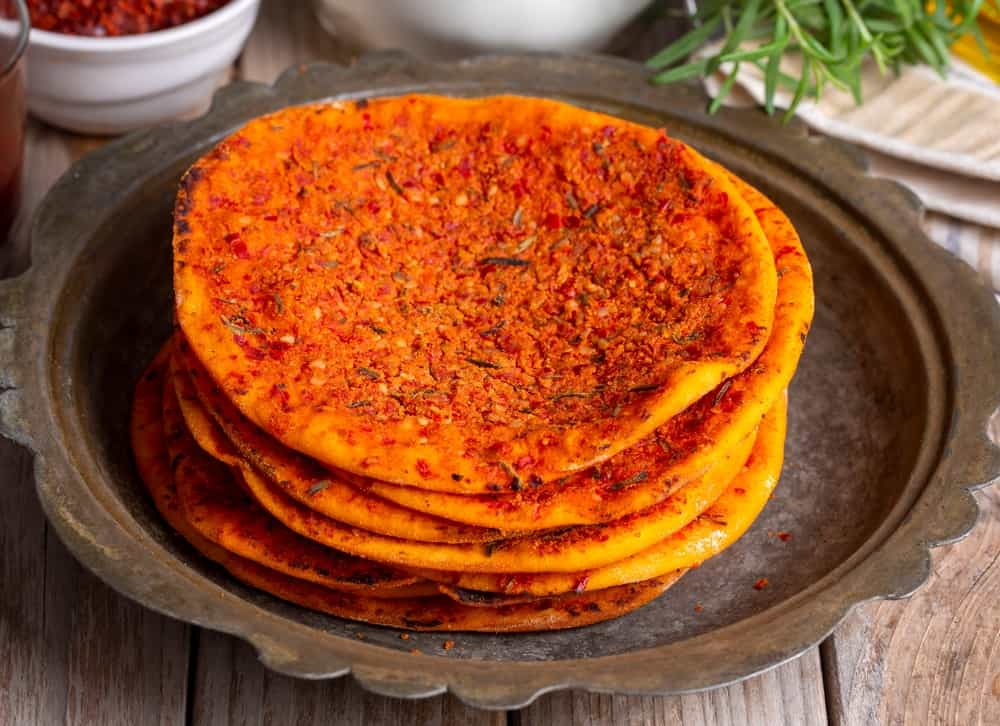
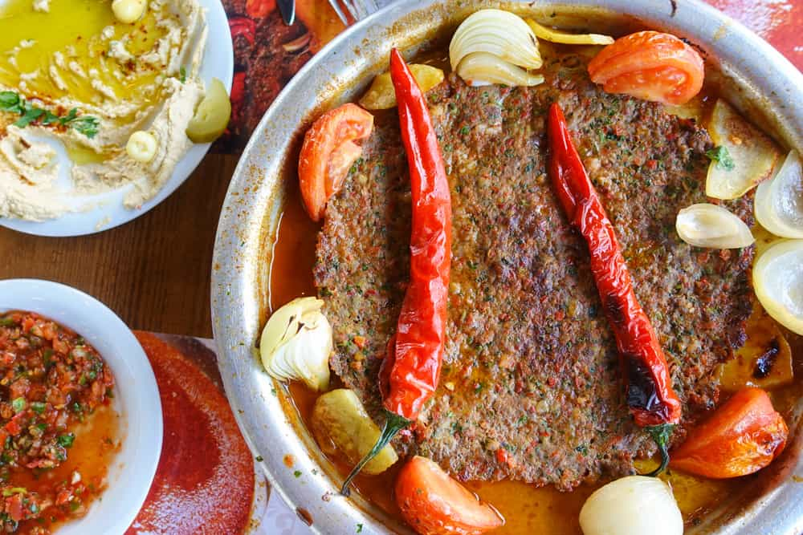
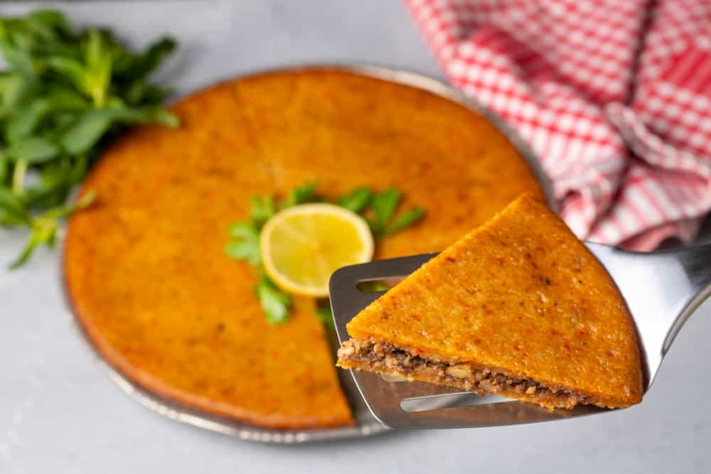
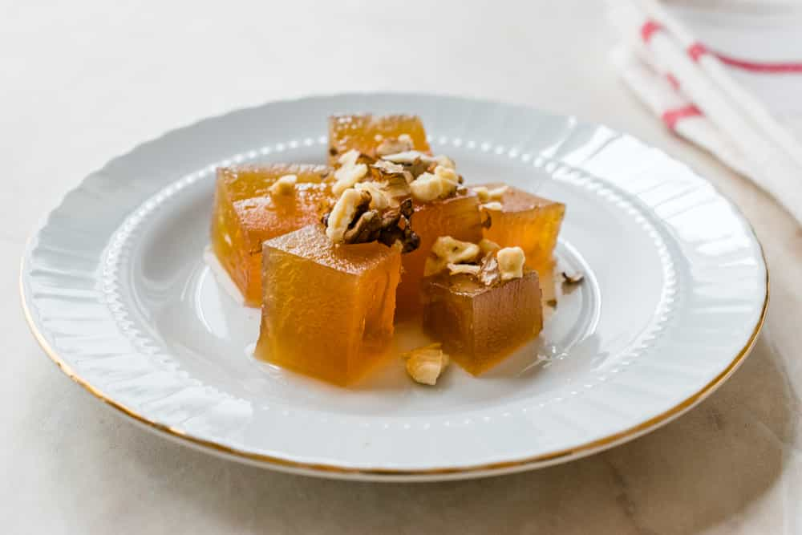
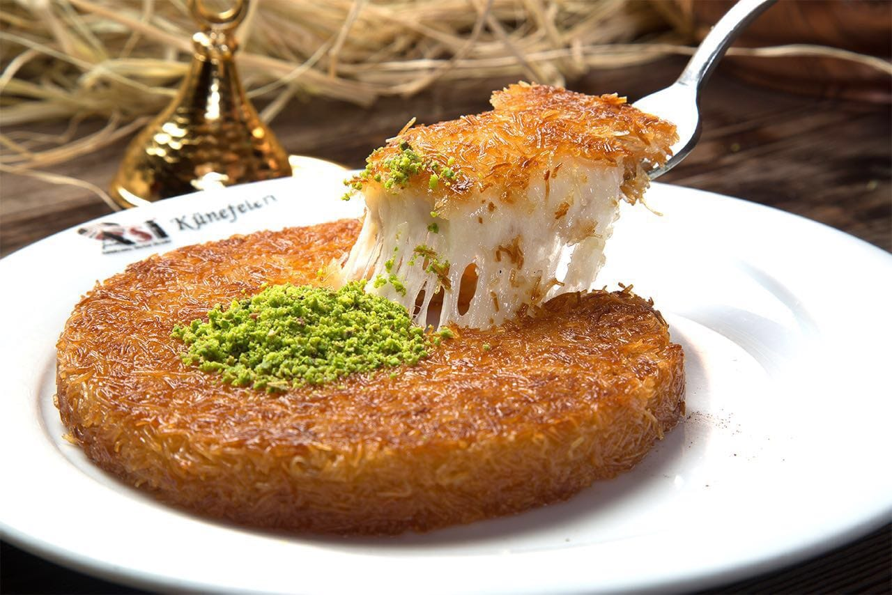
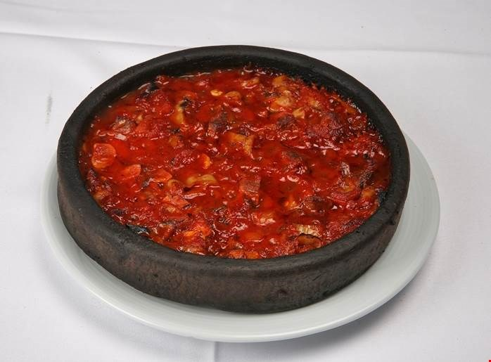
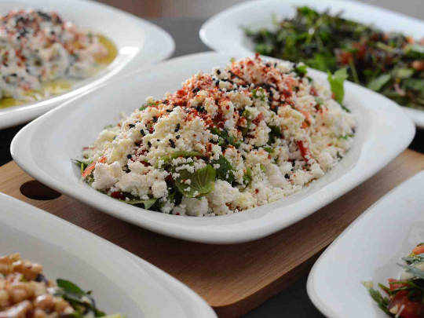
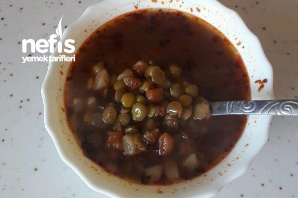

Biberli ekmek,Hatay için çok önemli bir yere sahip. Hem kahvaltılarda hem gün
içerisinde tüketilen Biberli Ekmek, yöre halkı tarafından yaz aylarında pikniğe giderken
yanlarında
götürülecek kadar seviliyor. Tıpkı bir lahmacun ve pizza gibi kendine ait sosu ile hazırlanan bu
lezzet, susam taneleri ile süsleniyor. Sosunda baharat, biber, salça ve soğan gibi pek çok
farklı
malzeme var. Hatay’da neredeyse her evde kahvaltı sofralarını süsleyen Biberli Ekmek, hem sıcak
hem
soğuk olarak tüketilebiliyor

Tepsi Kebabını Hatay haricinde ülkenin pek çok farklı şehrinde görmüş
olabilirsiniz. Ancak tepsi kebabının orijinal versiyonunun Hatay’da yenmesi gerektiğini söylemek
gerek. Evlerde sıklıkla hazırlanan Tepsi Kebabı; kıyma, soğan, patates, biber ve domates ile
hazırlanıyor. Kebap kendine ait yağı ile pişiyor olması sebebiyle unutulmayacak bir lezzet
yaratıyor. Ancak içeriğinden dolayı ağır bir yemek olduğunu söylemek gerek. Dolayısıyla akşam
saatlerinde ve genellikle soğuk havalarda tercih edildiğini dile getirmekte fayda var!

Hatay’da içli köfte, Oruk ismi ile anılıyor. Ancak Oruk adlı bu içli köftenin
herhangi bir yerde yediğiniz klasik bir içli köfte ile tamamen aynı olduğunu düşünmek büyük bir
hata
olur. Klasik İçli Köfte ile Oruk arasındaki en büyük fark, Oruk’un içerisine konulan dövülmüş
et.
Bunun yanı sıra her içli köfte yapımında olduğu gibi Oruk yapımında da büyük bir ustalık
gerekiyor.
Ceviz, soğan, bulgur, et, zeytinyağı ve çeşitli baharatlar kullanılarak zengin bir içeriğe sahip
hâle getirilen oruk, genellikle akşam yemeklerinde tüketiliyor.

Kömbe
Antakya Kömbesi, Hatay’a dair en önemli tatlılardan
biri.Hatay’da hazırlanan versiyonu diğer bölgelerde hazırlanan versiyonlarından oldukça
farklı. Hatay Kömbesi; içerisinde karanfil, mahlep, tarçın, yenibahar, zencefil ve damla sakızı
gibi
pek çok
farklı ham madde bulunuyor. Baharatlar ile zenginleştirilen kömbe, yumurta ve yoğurt bulunmayan
bir
hamur ile hazırlanıyor. Bu özelliğiyle uzun süre taze kaldığını dile getirmek mümkün.
Bayram sofralarında çokça tüketilir.

Kireçte kabak tatlısı
Hatay’da hazırlanan Kireçte Kabak Tatlısı’nın klasik Kabak Tatlısı’na
oranla çok daha farklı olduğunu söylemek yanlış olmaz. Öyle ki bu tatlı, neredeyse klasik kabak
tatlısını sevmeyenler tarafından bile beğeni görüyor.
Bölgede yetişen bal kabaklarından hazırlanan ve sönmemiş kireçte bekletilerek pişirilen Kireçte
Kabak Tatlısı, kendine ait eşsiz aroması ile âdeta büyülüyor. Genellikle ceviz ve tahin ile
servis
edilir. Mutlaka denemelisiniz.

Künefe
Künefe, Türkiye için en önemli lezzetlerden biri haline geldiği için
Türkiye’nin
pek çok farklı noktasında karşılaşabileceğiniz bir lezzet. Ancak Hatay’da tadacağınız Künefe’yi
hayat boyu unutamayacağınızı söylemek gerekiyor. Tuzsuz Antakya Peyniri, kadayıf, fıstık ve
şerbet
ile hazırlanan künefe; yiyenlerin bir daha unutamayacağı bir lezzet oluyor.

Belen Tava
Hatay seyahatimiz esnasında mutlaka denemeniz gereken bir lezzet olan Belen
Tava,
ekmek ile lezzeti bütünleşen yöresel bir tat. En önemli özelliği arasında yalnızca lezzeti değil
bunun yanı sıra çok doyurucu olması da var. Hatay’ın en yüksek ilçesi olan Belen’de ortaya çıkan
dolayısıyla bugün ilçe sınırlarını aşarak bütün Hatay’a ulaşmış olan Belen Tava, ilçenin ismi
ile
anılıyor. İçerisinde kuzu kuşbaşı, biber, soğan, sarımsak baharatlar bulunuyor. Özellikle soğuk
kış
günlerinin en sevilen lezzetlerinden biridir.

Çökelek Salatası
Çökelek; süt, yoğurt veya ayranın kaynatılmasıyla elde edilen, çok az tuzlu
veya
tuzsuz, yapımı kolay, kahvaltıda doğrudan tüketilebildiği gibi pasta, börek, çörek gibi
mamullerin
yapımında da kullanılabilen bir peynir çeşididir. Besin yönünden zengin ve oldukça hafif bir
peynir
türüdür. Anadolu’da “kesik”, “ekşimik”, “torak”, “hamçökelek”ve “keş” isimleriyle de
bilinmektedir.Antakya'nın çok değerli lezetlerinden birisidir çökelek. Sabah kahvaltılarında,
ve salatalarda sıklıkla kullanılmaktadır.

Hatay Ekşili Çorba
Ekşili çorba, Türk mutfağının önemli bir çorba çeşididir ve Hatay yöresine
özgü
bir tarif olan Hatay ekşili çorbası da bu lezzetli çorbalar arasında yer alır. Hatay ekşili
çorba,
yoğurt ve limon suyuyla ekşimsi bir tat verilen, içinde nohut ve bulgur gibi malzemeler bulunan,
oldukça doyurucu ve lezzetli bir çorbadır.Hatay ekşili çorba genellikle soğuk kış günlerinde
tercih
edilir. Çorbada kullanılan yoğurt, limon suyu, sarımsak ve baharatlar çorbaya karakteristik bir
lezzet katar. Genellikle ana yemeklerin başlangıcında veya yanında servis edilir.